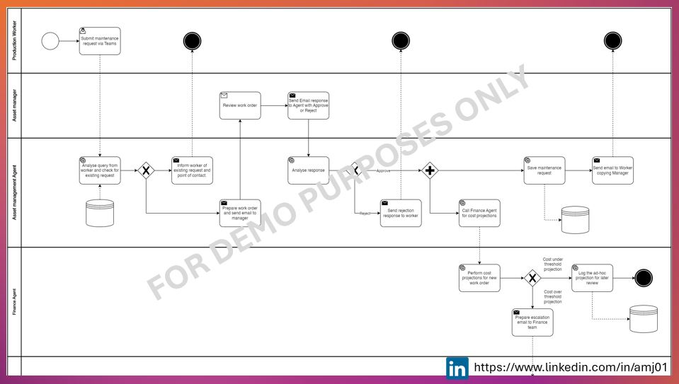

Digital Transformation Specialist with 6+ years of experience supporting technology-enabled change across enterprise systems and AI initiatives. Skilled in executing projects, analysing business needs, and improving processes through practical, hands-on solutions.
Scroll down and click "Learn more" to see some projects I have worked on.
Portfolio
Company Expense Tracker using OCR
Explore how receipts and invoices can be easily processed on the go using smartphones.
Semiconductor Nonconformance Monitoring
Simplify integration with MES and ERP systems through lightweight monitoring of equipment defects.
Automated ISO Certificate Validation
Track and monitor ISO compliance of manufacturers to ensure adherence to organisational and regulatory compliance requirements.
Maintenance Bot for Teams
Streamline maintenance reporting by allowing production workers to raise, track, and escalate requests directly through Microsoft Teams.
RAG Chatbot for Project Managers
Answer project-related queries by searching internal documentation first, and using the web if needed.
Automated EVM Dashboard Generator
Upload Excel or CSV files to generate real-time dashboards showing whether a project is on track and on budget.
Company Expense Tracker
Problem Statement
Manual tracking of expenses from PDF and image-based receipts is labour-intensive, prone to errors, and lacks consistency for finance review.
There are often delays before expenses can be filed, and data entry typically requires access to a computer.
Solution
Automatically extract and standardise data from uploaded PDF/image receipts using OCR and classification using Telegram.
Categorise expenses by type, department, and employee based on predefined business rules.
Generate a consolidated report highlighting anomalies or missing data for finance team validation.
Process
Employees upload receipts/invoices via a Telegram chatbot,
which triggers OCR to extract key fields.
Extracted data is saved in a
secure company Google Sheets document for finance tracking.
The system sends milestone updates to employees and forwards the expense
report to Finance via email.
Finance reviews the report and submits an approval or rejection decision
through email.
The decision is recorded in the tracker, and the employee is notified via
Telegram and email.
Key Outcomes
Over 70% reduction in manual data entry time for expense processing.
Improved accuracy and consistency in expense categorisation and reporting.
Quicker month-end close and enhanced audit readiness.
Project screenshots
-->
Semiconductor Nonconformance Monitoring
Problem Statement
In semiconductor manufacturing, nonconformance tracking for equipment issues such as glass breakage is often fragmented across MES, specialist tools, and ERP systems,
resulting in delayed responses, poor visibility for quality teams, and inconsistent follow-through on corrective actions.
Solution
Automate severity classification of equipment errors using predefined business rules (e.g. low, high, critical).
Automatically notify quality leads of high-risk cases and escalate critical events to corrective action agents via email.
Log all events, escalations, and resolutions in a centralised database to enable consistent tracking and reporting.
Process
The system detects a nonconformance event (e.g. GLASS_BREAK) and logs the error.
Severity is automatically assessed; low-risk issues are logged, high-risk ones trigger an email to the Quality Lead.
The Quality Lead evaluates the issue; critical items are escalated to the Corrective Action Agent.
Corrective actions are created in the ERP (e.g. D365) and logged for follow-up.
All actions and status updates are stored in a centralised tracking system for auditability and dashboard visibility.
Key Outcomes
Faster triage and resolution of critical equipment failures across the fab.
Clear escalation workflows and role separation between detection, review, and corrective action.
Real-time visibility through a centralised dashboard, enabling proactive quality management.
Project screenshots
Automated ISO Certificate Validation
Problem Statement
Manual review of ISO certificates from manufacturers is slow, inconsistent, and prone to oversight,
especially when tracking duplicates, expired certificates, or pending renewals. If not mitigated, this poses risks to compliance and vendor management.
Solution
Use AI to analyse uploaded ISO certificates and automate the approval or rejection decision based on content and metadata.
Perform database validation to check for duplicates and expiry before saving records.
Implement daily expiry checks and send automated email reminders for expiring certificates.
Process
The Manufacturer uploads an ISO certificate, which is received and analysed by the AI system.
The system sends the parsed certificate to the Reviewing Authority for a manual decision.
If approved, the certificate is checked for duplicates/expiry and saved to the database; else, a rejection email is sent to the Manufacturer.
Daily system checks categorise ISO records as valid, expired, or expiring.
Expiring certificates trigger email reminders to Manufacturers, prompting a re-evaluation process.
Key Outcomes
Significant reduction in manual effort for ISO certificate validation and tracking.
Improved compliance and vendor governance through proactive expiry alerts.
Centralised document database with automated duplicate and validity checks.
Project screenshots

Maintenance Bot for Teams Integration
Problem Statement
Maintenance request handling in production environments is often fragmented, leading to duplicated reports, inconsistent cost tracking, and slow communication between workers, asset managers, and finance teams.
Solution
Deploy a Teams-integrated bot to capture and triage maintenance requests from production staff in real time.
Automatically check for existing requests, assign escalation pathways, and route approvals to the correct asset manager.
Incorporate live cost projection workflows with the finance team to validate and escalate requests as needed.
Process
A production worker submits a maintenance request directly via the Teams bot.
The bot checks for existing requests; if found, it informs the worker and shares the point of contact.
If no existing request exists, a work order is generated and routed to the Asset Manager for approval.
Upon approval, the system triggers a cost estimation via the Finance Agent.
If cost is under threshold, the request is logged and confirmed; if over threshold, it’s escalated to the Finance Team for review.
Key Outcomes
Reduced duplication of maintenance tickets and better tracking of existing issues.
Faster routing and approval of maintenance work through integrated Teams communication.
Improved coordination between asset managers and finance through real-time cost visibility and escalation paths.
RAG Chatbot for Project Managers
Problem Statement
Project managers often struggle to quickly access reliable information across fragmented internal documents and evolving external sources, leading to delays in decision-making and duplicated research efforts.
Solution
Deploy a Retrieval-Augmented Generation (RAG) chatbot tailored for project management queries.
The chatbot first searches an internal knowledge base of current and past projects for relevant answers.
If no relevant internal data is found, it automatically queries trusted web sources to provide an up-to-date response.
Process
A project manager submits a question via the chatbot interface.
The chatbot performs a semantic search over the internal project knowledge base using vector embeddings.
If a relevant answer is found, it is returned immediately with source references.
If no internal match exists, the chatbot performs a targeted web search and yields a response.
The user can then decide whether to store this in the knowledge base or reject it.
Key Outcomes
Faster, more accurate access to project-specific knowledge for managers.
Reduced reliance on manual digging through documentation or chasing updates from peers.
Real-time fallback to web-based answers ensures up-to-date and complete guidance.
Automated EVM Dashboard Generator
Problem Statement
Manually calculating and presenting Earned Value Management (EVM) metrics from Excel or CSV project data is time-consuming, error-prone, and inconsistent across teams.
Solution
Build a lightweight app that parses Excel/CSV input and automatically generates a visual EVM dashboard.
Display key indicators such as project status (on track, delayed), budget alignment, and earned value metrics.
Enable instant insights for project managers without requiring spreadsheet manipulation or manual formula setup.
Process
User uploads a project progress file in Excel or CSV format.
The app extracts planned value, earned value, and actual cost data using predefined mappings.
It calculates common EVM metrics such as EV, PV, cost variance, and schedule variance automatically.
Results are displayed on a clean dashboard highlighting whether the project is on track and on budget.
Optional: export visual report as PDF or share via Teams/email.
Key Outcomes
Instant, reliable view of project health using standard EVM metrics.
Eliminates manual EVM calculations and spreadsheet errors.
Supports rapid reporting and stakeholder visibility on cost and schedule performance.